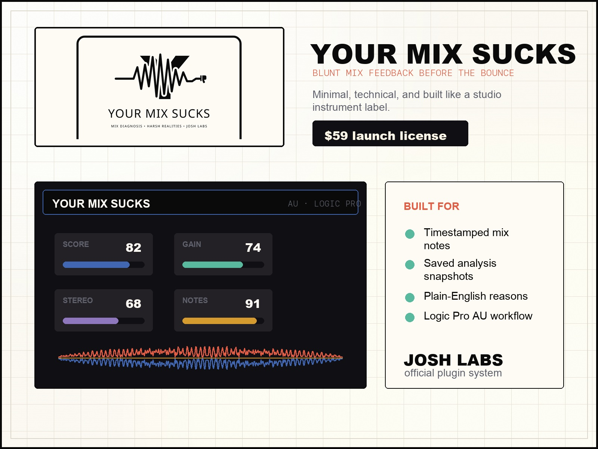

Launch wedge | $59 direction
Your Mix Sucks
Logic Pro AU mix-analysis plugin with real-time audio analysis, a Go rules engine, FlatBuffers IPC, scoring, and timestamped feedback across tonal balance, stereo field, dynamics, masking, and gain staging.